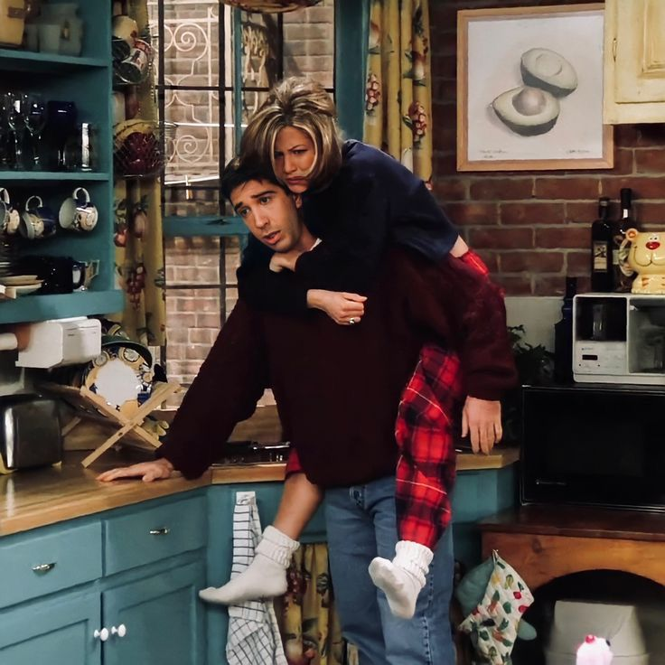

Friends
Friends é uma sitcom americana criada por David Crane e Marta Kauffman, exibida pela NBC de 1994 a 2004,
totalizando 236 episódios. A trama gira em torno de seis amigos que vivem em Greenwich Village, Nova York.
Inicialmente chamada Insomnia Cafe, a série foi desenvolvida com Kevin S. Bright e acabou se tornando um dos
maiores sucessos da TV, especialmente após reprises exibidas após Seinfeld.
Filmada com plateia ao vivo nos estúdios da Warner Bros na Califórnia, Friends encerrou após dez temporadas com
um episódio final assistido por 52,5 milhões de pessoas, sendo o quarto mais visto da história da TV americana.
A série ganhou diversos prêmios, incluindo seis Emmys e um Globo de Ouro, além de figurar entre os 50 melhores
programas de TV segundo a TV Guide. Após anos na Netflix, foi migrada para o HBO Max em 2020-2021. Em 2021, foi
lançado um episódio especial de reunião do elenco, Friends: The Reunion, na HBO Max.
Personagens
Rachel Green

Rachel Green era uma mulher rica e mimada que, após abandonar o noivo no altar, foi morar com Monica, uma amiga do colegial. O primeiro trabalho de Rachel foi como garçonete no café Central Perk, se tornando, posteriormente, uma vendedora na Bloomingdale's e na Ralph Lauren, na quinta temporada. Vivia uma relação instável com Ross, na qual tiveram uma filha, Emma. Rachel, apesar de ser inicialmente dependente da família, durante o seriado amadurece e passa a ser uma mulher independente. No último episódio da 10ª temporada, desiste de sua viagem a trabalho e passa a namorar novamente Ross.
Monica Geller

Monica Geller, irmã de Ross e chef de cozinha, é obsessiva-compulsiva por limpeza e tem um espírito competitivo. Durante a adolescência, era obesa, o que é motivo de lembranças ruins e neuroses. Todos os personagens gostam de se encontrar no seu apartamento. Apesar dos defeitos, ela é a anfitriã-mor da série. Começa a namorar Chandler e se casa com ele na sétima temporada do programa. Na décima temporada, adotam dois filhos por uma barriga de aluguel, uma adolescente que engravidou por acidente e não sabia que teria gêmeos.
Phoebe Buffay

Phoebe Buffay saiu de casa aos 14 anos, e foi moradora de rua antes de conhecer seus amigos. Excêntrica e vegetariana, sua mãe se suicidou, e seu pai abandonou a família. Ela e sua irmã gêmea, Ursula, se odeiam. Conheceu seu meio-irmão, Frank, e aceitou ser "barriga de aluguel" para ele. Trabalha como musicista (criando músicas como "Gato Fedorento/Smelly Cat") e massagista. Na temporada final, ela se casa com Mike Hannigan, interpretado por Paul Rudd.
Joey Tribbiani
Joey Tribbiani é um ator ítalo-americano que se torna famoso por seu papel na telenovela Days of our Lives como doutor Drake Ramoray. Tornou-se companheiro de quarto de Chandler. Possui um cômico raciocínio lento, fome enorme e adoração por pizza. Tenta conquistar toda mulher que aparece em sua frente com sua famosa frase "How you doing?". Nutriu um amor por Rachel que foi superado.
Chandler Bing
Chandler Bing foi um processador de dados (emprego esse desconhecido pelos seus amigos) e odiava esse trabalho até que, na nona temporada, ele finalmente teve coragem de se demitir para trabalhar com publicidade (trabalho de que ele gostava de verdade). Ele é o mais cômico dos personagens, e conhecido por seu humor sarcástico. É questionado sobre sua sexualidade e tem um pai travesti, o que aumenta ainda mais os rumores sobre esse tema. Sua mãe é uma famosa escritora de romances adultos. Seu relacionamento mais longo, antes do casamento com Monica Geller, foi com a irritante Janice, eternamente conhecida pela velha e inconfundível frase: "Oh... my... God!". O namoro com Janice finalmente acabou na terceira temporada.
Ross Geller

Ross Geller, irmão mais velho de Monica, é um paleontólogo que ama dinossauros e que se divorciou três vezes durante o seriado: da lésbica Carol (que lhe deu seu primeiro filho, Ben), da britânica Emily (cujo nome ele trocou pelo de Rachel no dia do casamento), e de Rachel (casaram-se bêbados em Las Vegas). Rachel e Ross tiveram uma filha juntos, Emma. É muito inteligente e apaixonado por Rachel desde o colegial.
Elenco

Antes de Friends, os seis atores principais já tinham alguma experiência na TV, mas não eram grandes estrelas.
Courteney Cox era a mais conhecida, com papéis em Ace Ventura e Family Ties. Lisa Kudrow já interpretava Ursula
em
Mad About You, personagem que foi incorporada também em Friends. Matt LeBlanc participou de Married... with
Children e seus spin-offs. Jennifer Aniston e Matthew Perry haviam feito pilotos de séries que não vingaram, e
David Schwimmer teve papéis pequenos em The Wonder Years e NYPD Blue.
Inicialmente, cada ator recebia US$
22.500 por episódio, mas os salários variaram na segunda temporada. A partir da terceira temporada, eles
passaram
a negociar juntos, o que igualou os salários — mesmo que isso significasse reduzir os ganhos de Aniston e
Schwimmer. Ao longo das temporadas, os valores cresceram até chegarem a US$ 1 milhão por episódio nas duas
últimas
temporadas. Eles também passaram a receber royalties.
A série foi pensada como um trabalho conjunto, sem
protagonistas definidos, e os atores fizeram questão de manter esse equilíbrio, inclusive nas premiações e nas
aparições públicas. Fora das câmeras, o elenco criou laços fortes de amizade que duraram após o fim da série,
com
destaque para a relação próxima entre Cox e Aniston.
Temporadas
Primeira Temporada
22/09/1994 - 18/05/1995
A primeira temporada introduz os seis personagens principais: Rachel, Monica, Phoebe, Joey, Chandler e Ross. Rachel chega no Central Perk, após deixar seu noivo Barry no altar e se mudar para o apartamento de Monica. Ross tenta constantemente dizer a Rachel que a ama, enquanto sua ex-esposa lésbica, Carol, está esperando seu bebê. Joey é apresentado como um ator lutando por seu espaço, enquanto Phoebe trabalha como massagista. Chandler termina com a namorada Janice (Maggie Wheeler), que frequentemente retorna em outros episódios. No final da temporada, Chandler acidentalmente revela que Ross ama Rachel, que percebe que ela se sente da mesma maneira.
Segunda Temporada
21/09/1995 - 16/05/1996
A segunda temporada começa com Rachel descobrindo que Ross está namorando Julie (Lauren Tom), alguém que ele conheceu em sua pós-graduação. Rachel tenta dizer a Ross que ela também gosta dele, depois de suas tentativas falhas na primeira temporada, embora os personagens finalmente comecem um relacionamento. Joey consegue um papel numa versão fictícia da novela Days of Our Lives, mas seu personagem é morto após ele alegar que escreve muitas das suas próprias falas. Monica começa a namorar Richard (Tom Selleck), recentemente divorciado e 21 anos mais velho que ela. No final da temporada, terminam o seu relacionamento, quando eles percebem que ao contrário de Monica, Richard não quer ter filhos.
Terceira Temporada
19/09/1996 - 15/05/1997
A terceira temporada assume um formato serializado significativamente maior. Rachel começa a trabalhar na Bloomingdale's, uma cadeia de lojas de departamento de luxo, e Ross fica com ciúmes de seu colega de trabalho, Mark. Rachel decide dar um tempo no namoro, e Ross, ferido e embriagado, dorme com outra garota, fazendo com que Rachel rompa com ele. Após acreditar que não tem família, exceto sua irmã gêmea Ursula (Lisa Kudrow), Phoebe conhece seu meio-irmão Frank Buffay Jr. (Giovanni Ribisi) e sua mãe biológica, também chamada Phoebe (Teri Garr). Joey desenvolve um relacionamento com sua parceira de cena Kate (Dina Meyer), e Monica começa um relacionamento com o milionário Pete Becker (Jon Favreau).
Quarta Temporada
25/09/1997 - 07/05/1998
Na estreia da quarta temporada, Ross e Rachel se reconciliam brevemente. Phoebe torna-se uma mãe de aluguel para o meio-irmão e sua esposa Alice (Debra Jo Rupp). Monica e Rachel são forçados a mudar de apartamentos com Joey e Chandler, depois de perder uma aposta, mas conseguem voltar subornando-os com ingressos para a temporada dos Knicks e um beijo de um minuto (fora da tela) entre as meninas. Ross começa a namorar uma mulher britânica chamada Emily (Helen Baxendale) e ao final da temporada organiza seu casamento em Londres. Chandler e Monica dormem juntos, e Rachel decide participar do casamento de Ross e Emily. Enquanto diz seus votos, Ross utiliza o nome de Rachel no altar, ao invés do da sua noiva, para o choque de sua noiva e dos convidados.
Quinta Temporada
24/09/1998 - 20/05/1999
Na quinta temporada, Monica e Chandler tentam manter seu novo relacionamento em segredo de seus amigos. Phoebe dá a luz a trigêmeos no centésimo episódio. Ela dá à luz um menino, Frank Jr. Jr., e duas meninas: Leslie e Chandler (originalmente eram para ser dois meninos e uma menina, mas decidiu-se manter o nome Chandler, apesar de o bebê ser uma menina). O casamento de Ross e Emily é cancelado por ela, que se sente ameaçada por Rachel, quando Ross diz não estar disposto a desistir de sua amizade com Rachel para atender às exigências de Emily. Phoebe começa um relacionamento com o policial Gary (Michael Rapaport). Monica e Chandler tornam seu relacionamento público, para surpresa e felicidade de seus amigos. Eles decidem se casar em uma viagem para Las Vegas, mas mudam seus planos depois de encontrarem Ross e Rachel, ainda bêbados, recém-casados na mesma capela.
Sexta Temporada
23/09/1999 - 18/05/2000
Na sexta temporada, depois de descobrir que estão casados, Ross e Rachel concordam em anular o casamento, mas Ross decide não querer se divorciar três vezes antes dos trinta anos e mente para Rachel, dizendo a ela que ele anulou a união, quando na verdade não o fez. Alguns episódios depois ela descobre a verdade e força Ross a seguir adiante com a anulação, mas não conseguem porque Rachel adiciona mentiras sobre Ross nos formulários, sendo então obrigados a dar entrada no divórcio. Chandler e Monica decidem que é cedo para se casarem, e ao invés disso, passam a morar juntos. Chandler muda-se para o apartamento de Monica, Rachel muda-se para o de Phoebe e Joey acaba sozinho no seu. Algum tempo depois, Janine muda-se para casa de Joey, e eles mais tarde acabam namorando. Mais tarde na temporada, um incêndio destrói o apartamento de Phoebe e Rachel. Então enquanto Rachel aloja-se na casa de Chandler e Monica, Phoebe fica em situação menos privilegiada, no apartamento de Joey. Contudo, quando os bombeiros descobrem que o incêndio foi iniciado por Rachel, Phoebe e Rachel invertem as moradias. Rachel diverte-se na casa de Joey, enquanto Phoebe incomoda-se com a compulsão de Monica com limpeza. Chandler planeja pedir Monica em casamento. No último episódio, ele não consegue fazer o pedido de casamento num restaurante chique pois Richard (Tom Selleck), ex-namorado de Monica, aparece. Pouco mais tarde, Richard vai até o restaurante onde Monica trabalha e diz que ainda a ama. Ela chega a pensar em voltar para Richard quando Chandler começa a fingir que não quer se casar (tudo para aumentar o suspense para quando realmente for propor), mas Joey explica a situação a ela. Quando Chandler volta para pedir em casamento, quem acaba pedindo é ela.
Sétima Temporada
12/10/2000 - 17/05/2001
Na sétima temporada, o apartamento de Phoebe e Rachel é reformado após o incêndio que quase o destruiu, mas quando retornam, descobrem que o que eram antes dois dormitórios, foi transformado em um único dormitório (porém maior), o que anima Phoebe a voltar a morar sozinha nele, enquanto Rachel continua a dividir apartamento com Joey. Joey retorna triunfante ao seu papel em Days of Our Lives, mas desta vez volta com um novo cérebro (após um duvidoso transplante), o da personagem Jessica Lockhart (Susan Sarandon). No último episódio desta temporada, é hora do casamento de Chandler e Monica, mas na noite anterior Chandler se apavora e desaparece. Enquanto ele está fora, Phoebe encontra um teste de gravidez positivo no banheiro de Monica, e acredita que a amiga esteja grávida. Phoebe e Ross encontram Chandler em seu escritório e o convencem a retornar. Porém, já mais próximo da hora da cerimônia, Chandler se apavora novamente, dessa vez com a notícia da suposta gravidez de Mônica e aparentemente foge (mas depois vê-se que ele se arrependeu e foi comprar uma pequena roupa de bebê no gift-shop do hotel). Monica e Chandler se casam, mas quando o noivo diz à noiva que sabe de sua gravidez, ela diz que não está grávida, e que o teste encontrado por Phoebe não era seu. Já no final do episódio, fica claro que a pessoa grávida é na verdade Rachel.
Oitava Temporada
27/09/2001 - 16/05/2002
Na oitava temporada, confirma-se que Rachel está grávida, e já a partir do segundo episódio os amigos, um após o outro, vão descobrindo que o pai é na verdade Ross. Alguns episódios depois, Ross e Rachel entram numa discussão para deixar claro quem teve a iniciativa de transar na fatídica noite. Rachel afirma que foi Ross, mas esse tem uma prova contundente, uma fita que por acidente gravou a relação dos dois (Ross estava na verdade filmando-se para praticar sua capacidade de flerte). Após convencer Rachel que a gravação foi por acidente, Ross e os outros assistem à fita e comprovam que foi Rachel quem tomou iniciativa. Ao continuarem morando juntos, Joey começa a se apaixonar por Rachel. Percebendo que Ross não está exercendo seus deveres parentais como desejava, Joey, ainda que relutante, convence Rachel a mudar-se para o apartamento do pai da criança que está esperando, e assim ela faz. Mais tarde Joey, fala com Ross sobre seus sentimentos por Rachel, ele fica chocado, no entanto é convencido por Monica a falar com Joey, na conversa ele revela que Rachel foi seu primeiro amor então Ross sugere que ele revele seus sentimentos a ela, e ele faz, porém ela educadamente o rejeita. No último episódio da temporada, ela dá a luz a uma menina que ainda não tinha nome. Quando Rachel pede para Monica falar os nomes escolhidos para seus futuros filhos, Rachel adora o nome feminino escolhido por Monica. Monica então permite que Rachel dê o nome à sua filha recém-nascida, que então passa a se chamar Emma.
Nona Temporada
26/09/2002 - 15/05/2003
Na nona temporada, Ross e Rachel têm uma discussão sobre morarem juntos. Sentindo não ser certo morar com Ross tendo um bebê juntos mas não estando num relacionamento, Rachel decide mudar-se novamente para a casa de Joey, levando sua filha Emma consigo. O emprego de Chandler começa a requerer que ele passe a maior parte da semana em Tulsa, Oklahoma. Ele aguenta por algum tempo, mas quando tem que passar o Natal longe da esposa e uma das sócias da empresa começa a dar em cima dele, ele pede demissão e procura um emprego na área de publicidade. Chandler e Monica tentam engravidar, mas não conseguem, por conta de dificuldades genéticas que os impedem de ter filhos juntos, fazendo deles um casal praticamente estéril. Decidem então partir para a adoção. Phoebe começa a namorar um homem chamado Mike Hanigan (Paul Rudd). Eles se dão muito bem e decidem morar juntos, mas quando ela pergunta a ele sobre o futuro do relacionamento, Mike diz a ela que por já ter passado por um divórcio, não quer se casar novamente. Como Phoebe deseja se casar, eles terminam. Rachel começa a se apaixonar por Joey. No último episódio da temporada, o grupo vai a Barbados, onde Ross participará como palestrante de um seminário sobre paleontologia. Phoebe leva sua antiga paixão, David (Hank Azaria) e Joey leva sua namorada Charlie (Aisha Tyler), amiga de Ross. Monica, ao descobrir que David está tentando fazer Phoebe esquecer Mike pedindo-a em casamento, liga para Mike e o intima a tomar uma atitude. Apesar de relutar de primeira, Mike decide ir até Barbados e pedir Phoebe em casamento antes de David. Mesmo confusa, Phoebe recusa a proposta de Mike (mas decide reatar o romance), e termina tudo com David. Joey e Charlie terminam quando percebem que têm pouco em comum, e logo em seguida Joey descobre que Rachel gosta dele. No meio tempo, Ross e Charlie se beijam e são flagrados por Joey, que decide então ir atrás de Rachel. Ao chegar em seu quarto, Joey a beija.
Décima Temporada
25/09/2003 - 06/05/2004
O relacionamento de Rachel e Joey dura apenas três episódios na décima temporada, pois eles percebem que são amigos demais e que o sexo seria impossível. Ross e Charlie também não progridem no relacionamento; quando ele tenta conseguir uma bolsa de estudos, é entrevistado por um ex-namorado de Charlie, Benji (Greg Kinnear). Quando esta se manifesta, ele confessa que ainda sente algo por ela e os dois parecem reatar o relacionamento ali mesmo, ignorando Ross. Alguns episódios mais tarde, Mike pede Phoebe novamente em casamento, recebendo um sim como resposta. Eles se casam logo depois. Chandler e Monica tentam adotar o bebê de uma mulher chamada Érica (Anna Faris), que está grávida e não poderá cria-lo. Eles também decidem se mudar para o interior do estado. No episódio final, Érica dá a luz a gêmeos, um casal. O menino se chama Jack, enquanto a menina se chama Érica. Rachel consegue uma entrevista para a Gucci, mas seu chefe na Ralph Lauren está no mesmo restaurante onde a entrevista acontece, e a demite; sabendo que ela já possuía um emprego, seu "futuro" chefe também deixa de contratá-la. Ao tirar suas coisas do escritório, ela encontra Mark, que lhe consegue um novo emprego, desta vez em Paris. Os cinco amigos organizam uma festa de despedida, e ela se despede de todos separadamente, com exceção de Ross, que se sente ignorado. Ross fica muito irritado e briga com Rachel. Ela então aparece no apartamento dele dizendo que ela só não se despediu dele pois era muito difícil, já que ele era a pessoa mais especial para ela, o que os leva a dormirem juntos. No último episódio da série, Ross descobre-se ainda amando Rachel, e decide ir atrás dela no aeroporto para demove-la da ideia de ir para Paris. Quando finalmente a encontra, ela surpreendentemente diz não. Ross volta arrasado para o seu apartamento, e encontra uma mensagem dela na secretária eletrônica, dizendo que ela ainda o ama e que está tentando descer do avião. Ao fim da mensagem, Rachel aparece na porta de Ross e eles se beijam. A série acaba com Chandler e Monica levando os gêmeos e os quatro amigos para mais um café no Central Perk. A última imagem é um rápido tour pelo apartamento vazio, seis chaves do apartamento, uma de cada personagem e um close fechando em cima da moldura que envolve o "olho-mágico" da porta, o símbolo mais emblemático da série.